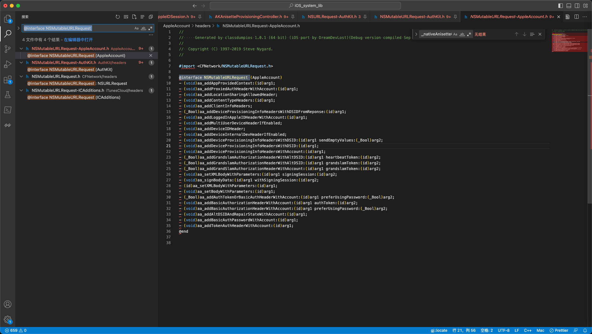

扩展属性
NSMutableURLRequest
对于iOS中的某些类，比如此处的：
NSMutableURLRequest
在Xcode中lldb调试时，po查看类的描述
(lldb) reg r x0 x1
x0 = 0x00000001db04bfe0 (void *)0x00505d81db04c008
x1 = 0x00000001cc774915
(lldb) po 0x00000001db04bfe0
NSMutableURLRequest
(lldb) po (char*)0x00000001cc774915
"ak_clientTimeHeader"
(lldb) po [0x00000001db04bfe0 _shortMethodDescription]
<NSMutableURLRequest: 0x1db04bfe0>:
in NSMutableURLRequest:
Class Methods:
+ (int) hashForPlayerID:(id)arg1; (0x982eeb81a8c38638)
+ (id) _gkHTTPRequestWithURL:(id)arg1 method:(id)arg2 postData:(id)arg3; (0xc811b081a8c38318)
+ (id) ak_anisetteHeadersWithData:(id)arg1; (0xb535781943bb2e0)
+ (id) ak_proxiedAnisetteHeadersWithData:(id)arg1; (0xa045d901943e358c)
+ (id) ak_proxiedClientInfoHeadersWithDevice:(id)arg1; (0x3e20c581943e3724)
+ (id) ak_clientTimeHeader; (0xb290781943bb584)
+ (id) ak_localeHeader; (0x1d588101943bb678)
+ (id) ak_timeZoneHeader; (0x2149a981943c14e4)
+ (id) ak_clientInfoHeader; (0x126bfa81943e310c)
+ (id) ak_deviceUDIDHeader; (0x231e5601943e3204)
+ (id) ak_anisetteHeadersWithCompanionData:(id)arg1; (0xa4016481943e32f8)
+ (id) ak_proxiedHeadersForDevice:(id)arg1 anisetteData:(id)arg2; (0xc85f8181943e3490)
Properties:
@property (copy) NSString* HTTPMethod;
@property (copy) NSDictionary* allHTTPHeaderFields;
...
@property BOOL assumesHTTP3Capable; (@dynamic assumesHTTP3Capable;)
@property unsigned long attribution; (@dynamic attribution;)
Instance Methods:
- (void) setInternal:(BOOL)arg1; (0x32274f81a8c39258)
...
- (void) bindToCommand:(struct __CNPluginCommand*)arg1; (0xba0f0781c581b7c0)
- (void) _web_setHTTPContentType:(id)arg1; (0xee176781a56b8d34)
- (void) _web_setHTTPReferrer:(id)arg1; (0x58445c81a56b8d48)
- (void) _web_setHTTPUserAgent:(id)arg1; (0xc61f5601a56b8dc8)
- (void) bindToHotspotHelperCommand:(id)arg1; (0x531c418195a851fc)
...
- (void) ams_addAuthorizationHeaderForAccount:(id)arg1; (0xfe0abb8185e587b0)
- (void) ams_setBodyParameters:(id)arg1 encoding:(long)arg2 compressBody:(BOOL)arg3 error:(id*)arg4; (0x2124cd8185a8f370)
- (void) ams_addSilentEnrollmentHeadersForAccount:(id)arg1; (0xf968a28185e589d4)
- (void) ak_addDeviceUDIDHeader; (0xa76e8701943e1afc)
- (void) ak_addClientTimeHeader; (0x93559101943e1ba8)
...
- (void) ak_addPhoneNumberHeader; (0x1d7a0c81943e2e10)
...
- (void) ak_addExecutionModeHeader:(BOOL)arg1; (0x4c3d4881943e3a70)
- (void) ak_addPrivateEmailKeyHeader:(id)arg1; (0xb10af301943e3ae8)
- (void) fam_addiTunesHeadersWithAccount:(id)arg1; (0xe86439818f8477ac)
- (void) aa_addBasicAuthPasswordWithAccount:(id)arg1; (0x627c701944c6efc)
- (void) aa_addTokenAuthHeaderWithAccount:(id)arg1; (0xff511601944c6d4c)
- (void) aa_addDeviceProvisioningInfoHeadersWithDSID:(id)arg1 sendEmptyValues:(BOOL)arg2; (0x7b607b01944c7ce8)
...
- (void) aa_addDeviceInternalDevHeaderIfEnabled; (0x2e3ed401944c7e1c)
- (void) aa_addDeviceIDHeader; (0xb25bc301944c7ea4)
- (void) ic_appendHTTPCookies:(id)arg1; (0xc330c00198eb270c)
- (void) ic_appendHTTPCookieWithName:(id)arg1 value:(id)arg2; (0xe4498a8198eb2628)
- (void) cdp_addAuthHeaderWithContext:(id)arg1; (0xb6048f01adf4e048)
- (void) cdp_addClientInfoHeader; (0x3b77b181adf4e254)
- (void) setTimeoutInterval:(double)arg1; (0x9926ad01820970bc)
- (void) setAllowsExpensiveNetworkAccess:(BOOL)arg1; (0x950f2281820a0ac8)
- (void) setHTTPMethod:(id)arg1; (0xfd389d0182094b08)
...
- 除了类本身自带的属性和函数
- 属性
@property (copy) NSString* HTTPMethod;
- 函数
- (void) setTimeoutInterval:(double)arg1; (0x9926ad01820970bc)
- 属性
- 其他还有很多：某类字母开头的属性和函数
- ak
+ (id) ak_clientInfoHeader; (0x126bfa81943e310c)- (void) ak_addPrivateEmailKeyHeader:(id)arg1; (0xb10af301943e3ae8)
- aa
- (void) aa_addDeviceIDHeader; (0xb25bc301944c7ea4)
- ams
- (void) ams_addAuthorizationHeaderForAccount:(id)arg1; (0xfe0abb8185e587b0)
- ak
而之前不清楚：为何会有这些额外的属性和函数。
后来找到了：
ak相关的属性的来源的头文件：
【未解决】iOS逆向Apple账号：AuthKit的NSMutableURLRequest相关
-》
/Users/crifan/dev/dev_root/iosReverse/AppleStore/iOS_system_lib/AuthKit/headers/NSMutableURLRequest-AuthKit.h
//
// Generated by classdumpios 1.0.1 (64 bit) (iOS port by DreamDevLost)(Debug version compiled Sep 26 2020 13:48:20).
//
// Copyright (C) 1997-2019 Steve Nygard.
//
#import <CFNetwork/NSMutableURLRequest.h>
@interface NSMutableURLRequest (AuthKit)
...
+ (id)ak_anisetteHeadersWithCompanionData:(id)arg1;
+ (id)ak_anisetteHeadersWithData:(id)arg1;
+ (id)ak_deviceUDIDHeader;
+ (id)ak_clientInfoHeader;
+ (id)ak_timeZoneHeader;
+ (id)ak_localeHeader;
+ (id)ak_clientTimeHeader;
- (void)ak_addRequestUUIDHeader:(id)arg1;
...
- (void)ak_addPhoneNumberCertificateHeaderWithValue:(id)arg1;
- (void)ak_addPhoneNumberHeader;
- (void)ak_addProxiedDeviceSerialNumberHeader:(id)arg1;
...
- (void)ak_addInternalBuildHeader;
@end
即：
AuthKit 对于 NSMutableURLRequest 做了额外扩展（和继承）
添加了更多的：相关的属性和函数
且命名时，尽量都以ak_开头
对应的库AuthKit的首字母缩写
并且，去头文件中搜：
@interface NSMutableURLRequest
又找到更多的：
继承了 = 扩展了：NSMutableURLRequest
的一些类：

4 个结果 - 4 文件
AppleAccount/headers/NSMutableURLRequest-AppleAccount.h:
8
9: @interface NSMutableURLRequest (AppleAccount)
10 - (void)aa_addAppProvidedContext:(id)arg1;
AuthKit/headers/NSMutableURLRequest-AuthKit.h:
8
9: @interface NSMutableURLRequest (AuthKit)
10 + (id)ak_proxiedClientInfoHeadersWithDevice:(id)arg1;
CFNetwork/headers/NSMutableURLRequest.h:
10
11: @interface NSMutableURLRequest : NSURLRequest
12 {
iTunesCloud/headers/NSMutableURLRequest-ICAdditions.h:
8
9: @interface NSMutableURLRequest (ICAdditions)
10 - (void)ic_appendHTTPCookieWithName:(id)arg1 value:(id)arg2;
-》
/Users/crifan/dev/dev_root/iosReverse/AppleStore/iOS_system_lib/AppleAccount/headers/NSMutableURLRequest-AppleAccount.h
#import <CFNetwork/NSMutableURLRequest.h>
@interface NSMutableURLRequest (AppleAccount)
- (void)aa_addAppProvidedContext:(id)arg1;
...
- (void)aa_addTokenAuthHeaderWithAccount:(id)arg1;
@end
/Users/crifan/dev/dev_root/iosReverse/AppleStore/iOS_system_lib/CFNetwork/headers/NSMutableURLRequest.h
#import <CFNetwork/NSURLRequest.h>
@class NSData, NSDictionary, NSInputStream, NSString, NSURL;
@interface NSMutableURLRequest : NSURLRequest
{
}
- (void)setBoundInterfaceIdentifier:(id)arg1;
@property _Bool allowsCellularAccess; // @dynamic allowsCellularAccess;
@property unsigned long long networkServiceType; // @dynamic networkServiceType;
- (id)copyWithZone:(struct _NSZone *)arg1;
@property _Bool assumesHTTP3Capable; // @dynamic assumesHTTP3Capable;
@property _Bool allowsExpensiveNetworkAccess; // @dynamic allowsExpensiveNetworkAccess;
@property _Bool allowsConstrainedNetworkAccess; // @dynamic allowsConstrainedNetworkAccess;
@property(copy) NSURL *mainDocumentURL; // @dynamic mainDocumentURL;
@property double timeoutInterval; // @dynamic timeoutInterval;
@property unsigned long long cachePolicy; // @dynamic cachePolicy;
@property(copy) NSURL *URL; // @dynamic URL;
- (void)setContentDispositionEncodingFallbackArray:(id)arg1;
- (void)_setPayloadTransmissionTimeout:(double)arg1;
- (void)_setIgnoreHSTS:(_Bool)arg1;
- (void)_setPreventHSTSStorage:(_Bool)arg1;
- (void)_setRequiresShortConnectionTimeout:(_Bool)arg1;
- (void)_setStartTimeoutDate:(id)arg1;
- (void)_setTimeWindowDuration:(double)arg1;
- (void)_setTimeWindowDelay:(double)arg1;
- (void)setExpectedWorkload:(unsigned long long)arg1;
@property _Bool HTTPShouldUsePipelining;
- (unsigned long long)requestPriority;
- (void)setRequestPriority:(unsigned long long)arg1;
@property _Bool HTTPShouldHandleCookies;
- (void)setHTTPUserAgent:(id)arg1;
- (void)setHTTPReferrer:(id)arg1;
- (void)setHTTPExtraCookies:(id)arg1;
- (void)setHTTPContentType:(id)arg1;
@property(retain) NSInputStream *HTTPBodyStream;
@property(copy) NSData *HTTPBody;
- (void)addValue:(id)arg1 forHTTPHeaderField:(id)arg2;
- (void)setValue:(id)arg1 forHTTPHeaderField:(id)arg2;
@property(copy) NSDictionary *allHTTPHeaderFields;
@property(copy) NSString *HTTPMethod;
@end
-》看起来是本身的类。
/Users/crifan/dev/dev_root/iosReverse/AppleStore/iOS_system_lib/iTunesCloud/headers/NSMutableURLRequest-ICAdditions.h
#import <CFNetwork/NSMutableURLRequest.h>
@interface NSMutableURLRequest (ICAdditions)
- (void)ic_appendHTTPCookieWithName:(id)arg1 value:(id)arg2;
- (void)ic_appendHTTPCookies:(id)arg1;
@end
对应着：
ic开头的属性和函数- 对应的库是：
ICAdditions
- 对应的库是：
至此，以后再遇到：
iOS其他的类，又有额外的，xx_等开头的内容
就大概能猜出，大概率是继承了iOS原先的类
然后可以去导出的头文件中去找，对应的类了。
且去搜索的字符串的格式，大概可以用：
@interface OrignalClassName
或：
@interface OrignalClassName (
-》就可以找到继承该类的，其他类了
估计就能看到加了哪些额外的属性和函数了。